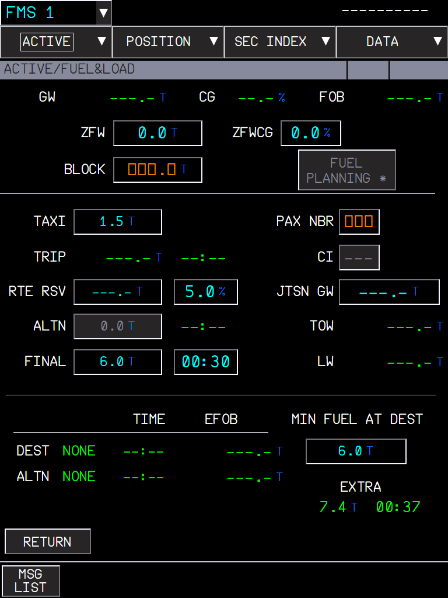

Every A380X MFD FMS and SURV page on its FCOM figure with the FCOM entry formats, the missing pages and functions (FUEL PLANNING, computed ALTN fuel, printing, DIRECT TO options, pilot-stored elements), the KCCU keyboard rules and the SURV memos
AircraftA380X (the shared flight plan code of DIRECT TO, the 50 waypoint limit and the company winds is also in the A32NX FMS, unchanged for it)Where to find itMFD FMS pages (ACTIVE, POSITION, SEC INDEX, DATA menus) and SURV pages; KCCU; E/WD memos; flyPad Settings > Realism and Dispatch > PrintoutsBranchcore/a380x-mfd-fms, based on core/surveillance (stacked: needs core/surveillance merged first). core/a380x-atccom-datalink, core/fuel, core/gps, core/a380x-interactive-nd and core/efb-performance are stacked on it.StatusFMS pages used in the sim since September 2026; tested in the sim by the user: FUEL PLANNING (2026-10-02), DEST EFOB fix (2026-09-26), printing (2026-09-26 and 2026-10-02), SEC page fix (2026-09-27), clickable checkboxes (2026-09-26). Not sim-tested: EXTRA time, company fuel figures, 50 waypoint limit, SURV memos, SURV page layout as a whole, company winds and FIX INFO fixes. Unit tests: 34 (DIRECT TO 10, pilot-stored elements 17, ALTN fuel 5, waypoint limit 2).PicturesCaptain MFD and flyPad in the local browser harness, running the full development build installed in the sim (pages that other core branches extend may show their extra items). The harness has no navigation database and no flight plan, so most values are dashes or amber boxes; the DIRECT TO geometry is a drawing. No pictures for the features without an old manual.
1. MFD FMS pages to the FCOM
2. FUEL PLANNING: minimum BLOCK computed and confirmed
3. DEST EFOB before takeoff without the TAXI fuel, ALTN EFOB units
4. Computed ALTN fuel and time
5. EXTRA time and the FINAL holding fuel flow
6. Fuel figures of the company flight plan
7. FMS print functions and the flyPad printouts
8. Pilot-stored elements kept across sessions
9. 50 pilot-stored waypoints
10. DIRECT TO options: ABEAM, CRS IN, CRS OUT
11. KCCU keyboard entries: ENT validates, ESC cancels
12. KCCU KBD and CCD switches: FCOM rules, ON by default
13. SURV pages laid out and wired per the FCOM
14. SURV memos, and TCAS STBY with ALT RPTG OFF
15. FMS function fixes: SEC pages, company winds, FIX INFO, STORE WPT, RTE SEL, WIND levels
16. MFD display fixes: sizes, labels, menus and clickable controls
1. MFD FMS pages to the FCOM
Aircraft: A380X | Where: MFD FMS pages, both sides | Status: Built in September 2026 and used in the sim since; individual pages were fixed after the in-sim checks (see the two fix features at the end).
What it is for
Every FMS page of the MFD is laid out on its figure of the A380 FCOM (DSC-22-FMS-20-30, PDF pages 1009 to 1409), the fields accept the FCOM entry formats, and the pages and functions the FCOM describes and FBW did not have are added.
What changed, in short
Layout: each page is placed on its figure of the A380 FCOM (DSC-22-FMS-20-30, the 2011 KAL FCOM): field positions, 40 px entry fields, 22.5 px labels, 38 px tab bar, the title bar. Where FBW followed a newer FMS standard than this FCOM, the FCOM figure was followed.
Entry formats: every field accepts the FCOM entry formats (DSC-22-FMS-20-100) and answers with the FCOM messages (FORMAT ERROR, ENTRY OUT OF RANGE, NOT IN DATABASE...).
New pages: ALTERNATE, CLOSEST AIRPORTS, OFFSET, EQUI-TIME POINT, LL XING / TIME MKR, WIND, the POSITION pages, DATA / WAYPOINT, NAVAID, ROUTE, PRINTER, company requests (wind, flight plan, report, takeoff data), TRANSFER TO MAILBOX, REJECTED ATC INFO.
New functions: FUEL PLANNING with CONFIRM BLOCK, LRC and MAX TURB speeds, VERT REV RTA, FMS P/N, pilot-stored elements, automatic airway connection, printing.
The menus at the top of the FMS pages give access to everything: ACTIVE (the active flight plan and its pages), POSITION, SEC INDEX (the secondary flight plans) and DATA.
ACTIVE menu
INIT
Figure 1. INIT: every button is live. CPNY F-PLN REQUEST (flight plan from the airline, i.e. SimBrief), RTE SEL / ALTN RTE SEL (route selection from the stored and company routes), CPNY WIND REQUEST, CPNY T.O. REQUEST, WIND, and the shortcuts IRS, DEPARTURE, NAVAIDS, FUEL&LOAD, T.O. PERF and RTE SUMMARY.
Amber boxes are mandatory entries; blue dashes are optional ones.
CPNY RTE: type a stored or company route of the city pair: it is inserted; otherwise NOT IN DATABASE.
RTE SUMMARY stores the active route as a pilot-stored route (DATA / ROUTE).
FUEL&LOAD and FUEL PLANNING
Figure 2. FUEL&LOAD. FUEL PLANNING (next to BLOCK) is available when the flight plan and the weights allow the predictions.
FUEL PLANNING computes the minimum block fuel from the FMS predictions (trip, reserves, alternate, final, taxi) and offers CONFIRM BLOCK, which inserts it (FCOM P 179; see the FUEL PLANNING feature below). The EXTRA line shows what is left above the minimum.
PERF
Figure 3. PERF T.O with the company takeoff data button (the flyPad takeoff calculator that answers it is on core/efb-performance).Figure 4. PERF CRZ: MANAGED, PRESEL, and the LRC and MAX TURB speeds.
LRC (long range cruise): the Mach giving 99 % of the maximum specific range (FCOM PER-IFT).
MAX TURB: the recommended speed for flying in turbulence.
F-PLN and its revisions
Figure 5. F-PLN without a flight plan: P.POS, DISCONTINUITY, END OF F-PLN, NO ALTN F-PLN.
Click a waypoint name to open the lateral revision menu, a speed/altitude to open the vertical revision. The new pages below open from these menus or from F-PLN INFO.
Figure 6. ALTERNATE: the selected alternate, the database alternates with their company route, track, distance and EXTRA fuel, and two OTHER ALTN fields.Figure 7. CLOSEST AIRPORTS: the 4 closest airports from P.POS with distance, bearing, UTC, EFOB and effective wind, and up to three OTHER ARPTs.
Figure 8. OFFSET: start and end waypoints, distance LEFT / RIGHT, intercept angle (30° by default), CANCEL OFFSET.Figure 9. EQUI-TIME POINT: two reference airports, their cruise wind, and the ETP with its bearing, distance and time.
Figure 10. LL XING / TIME MKR: a waypoint at every LAT or LONG crossing (start, increment, number, INSERT AS WPT); a time marker with remaining time and an aural alert.Figure 11. VERT REV, RTA tab: time at a waypoint (AT, AT OR BEFORE, AT OR AFTER), ETA and the speed to meet it; the time error thresholds of the FCOM apply.
Figure 12. AIRWAYS: up to 31 segments; typing the next airway after a waypoint connects the two airways automatically at their intersection.
WIND and the company requests
Figure 13. WIND: HISTORY (winds recorded in the last flight), CLB, CRZ (per waypoint, 4 levels and the SAT), DES; CPNY WIND REQUEST at the bottom.Figure 14. COMPANY WIND DATA REQUEST: free text and SEND WIND REQUEST.
Figure 15. COMPANY F-PLN REQUEST: flight number, company route, free text.Figure 16. COMPANY F-PLN REPORT: free text, SEND REPORT TO CPNY.
NoteThe company functions use SimBrief (flight plan) and the flyPad (takeoff data). A request without a company able to answer ends after a timeout with the FCOM message.
POSITION menu
Figure 17. MONITOR: FMS1/2, RADIO, MIXIRS, GPIRS, IRS and GPS positions, accuracy, EPU and RNP, FREEZE POSITION, BRG / DIST TO.Figure 18. IRS: alignment, the three IRS with their data, FREEZE ALL IRS.
Figure 19. NAVAIDS: tuned for display (VOR, ADF, LS) and selected for FMS NAV, DESELECT GLIDE.Figure 20. GPS: both receivers: position, mode, satellites, accuracy, track, UTC, altitude, ground speed.
Figure 21. TIME: UTC, date, flight and block time, OUT / OFF / ON / IN, and PERM DATA SETUP (what the permanent data shows).Figure 22. REPORT: last, to and next waypoints with time and altitude, the last sequenced waypoint data, the next cruise profile change, destination.
NoteThe TIME page is not in the 2011 FCOM; it follows a later FMS standard at the user's request.
SEC INDEX
Figure 23. SEC INDEX: SEC 1 / 2 / 3, IMPORT, CPNY F-PLN REQUEST into a SEC, the pages of the SEC, DELETE, XFER TO MAILBOX and PRINT.Figure 24. TRANSFER TO MAILBOX: sends the SEC flight plan to the ATC mailbox with a free text.
REJECTED ATC INFO (FCOM P 321-323) lists the elements of an ATC flight plan inserted in SEC 3 that the FMS rejected, 4 per page. MSFS cannot send an ATC flight plan, so the list stays empty.
DATA menu
Figure 25. STATUS: aircraft and engine, IDLE / PERF factors (FMS P/N tab), navigation database SWAP, and the count of the pilot-stored elements with DELETE ALL.Figure 26. PRINTER: print the F-PLN INIT, T.O and wind data, the active and SEC flight plan reports, and the AUTO PRINT options.
Figure 27. WAYPOINT: database waypoints by ident; pilot-stored waypoints (lat/long, place/bearing/distance, place-bearing/place-bearing), NEW WPT.Figure 28. NAVAID: database navaids (class, position, frequency, ILS course and slope...); pilot-stored navaids, NEW NAVAID.
Figure 29. ROUTE: database (company) routes of a city pair, pilot-stored routes with their summary, NEW RTE, DELETE.Figure 30. AIRPORT: database airports, and the PILOT STORED RWYs tab.
The printouts appear in the flyPad printouts list (see the print feature below).
What to expect
Situation
What you should see
An entry in a wrong format
FORMAT ERROR in the message area; the field keeps its value.
A value out of the FCOM range
ENTRY OUT OF RANGE.
A waypoint or navaid not found
NOT IN DATABASE (or the NEW WPT / NEW NAVAID page when the FCOM says so).
A company request with no company answer
The FCOM timeout message after a few minutes.
A page not available in the flight phase
Its button is greyed.
Limitations and why
Limitation
Why
What to do
The layout follows the 2011 A380 FCOM.
It is the reference available; later FMS standards differ in places.
Report a difference with its FCOM page.
Some values are FBW model stand-ins.
For example GPS satellites and accuracy, like on the A32NX MCDU GPS page; MSFS does not simulate them.
-
Company functions answer only through SimBrief and the flyPad.
There is no airline datalink in MSFS.
-
Pilot-stored navaids cannot be tuned.
The radio tuning uses the MSFS navaids only.
-
How to use
Open the FMS pages with the MFD menus: ACTIVE (F-PLN, PERF, FUEL&LOAD, WIND, INIT), POSITION, SEC INDEX, DATA.
Fill the amber boxes (mandatory) and the blue dashes you need (optional), in the FCOM formats.
Open the flight plan revisions by clicking a waypoint (lateral) or a speed / altitude (vertical) on F-PLN.
Read a wrong entry's message in the message area (FORMAT ERROR gives the expected format), clear it with CLR INFO.
How to test
#
Do this
Expected result
1
A380X powered on the ground, MFD on. MFD > ACTIVE > INIT.
The INIT page as its picture above: CPNY F-PLN REQUEST, RTE SEL, ALTN RTE SEL, CPNY WIND REQUEST, CPNY T.O. REQUEST, the shortcuts at the bottom.
2
Type ABC in the TROPO field of INIT (or any altitude field).
FORMAT ERROR with the expected format in the message area; the field keeps its value.
3
Type 99999 in TROPO.
ENTRY OUT OF RANGE.
4
With a flight plan: F-PLN, click a waypoint, open the revision menu.
The menu items open the new pages: ALTERNATE, CLOSEST AIRPORTS, OFFSET, EQUI-TIME POINT, LL XING / TIME MKR, AIRWAYS, FIX INFO, HOLD.
5
AIRWAYS: type an airway, then the next airway right after it.
The two airways are connected at their intersection automatically.
6
PERF > CRZ.
The LRC and MAX TURB speeds are shown.
7
Open POSITION > MONITOR, IRS, NAVAIDS, GPS, TIME, REPORT.
Each page as its figure in the POSITION menu section.
8
Open DATA > STATUS, PRINTER, WAYPOINT, NAVAID, ROUTE, AIRPORT.
Each page as its figure; DATA / STATUS counts the pilot-stored elements.
9
ACTIVE > WIND: CPNY WIND REQUEST, SEND WIND REQUEST (SimBrief account set in the flyPad).
The company winds come back from SimBrief for insertion; without an answer, the FCOM timeout message.
2. FUEL PLANNING: minimum BLOCK computed and confirmed
Aircraft: A380X | Where: MFD > ACTIVE > FUEL&LOAD | Status: Tested in the sim by the user: OK (2026-10-02); the click and convergence fixes user-confirmed in the sim on 2026-09-26.
What it is for
The FUEL PLANNING button of FUEL&LOAD (A380 FCOM DSC-22-FMS-20-30 P 179) could not be activated and did nothing. It now computes the minimum block fuel and offers CONFIRM BLOCK to enter it.
Available before engine start, with a flight plan and a cruise flight level, the ZFW and ZFWCG entered and no BLOCK entered by the crew.
BLOCK = TAXI + TRIP + RTE RSV + MIN FUEL AT DEST. The TRIP comes from the flight plan predictions, which need a fuel on board: they run with a trial BLOCK, replaced by the result until two computations in a row agree within 50 kg (no result after 8 iterations). A prediction is used only when it was computed with the current trial fuel (before, the first prediction still at the VNAV starting estimate of 4000 lb made the BLOCK grow by about 18 t per iteration: CYUL-CYVR 197.9 t instead of about 63 t).
While it runs (about 20 to 30 s, several prediction cycles) the button reads COMPUTING..., greyed. Not in the FCOM: the real FMS computes the BLOCK at once.
The minimum BLOCK shows in yellow next to the BLOCK field and the button becomes CONFIRM BLOCK, which enters it. A BLOCK entry or an engine start ends the fuel planning.
FUEL PLANNING did not react at first: the hidden CONFIRM BLOCK at the same place took the click. Hidden FCOM page elements no longer take clicks (checked on 16 FMS and SURV pages).
Limitations and why
Limitation
Why
What to do
A few seconds of COMPUTING...
The FBW predictions need a fuel on board, so the BLOCK is found by iteration.
Wait for the yellow value.
The TRIP comes from the FBW VNAV model.
It can differ from a SimBrief OFP (the user measured the model lower than SimBrief).
Compare with your OFP.
How to use
Before engine start, with the flight plan, cruise FL, ZFW and ZFWCG entered, open ACTIVE > FUEL&LOAD.
Press FUEL PLANNING and wait for the yellow minimum BLOCK.
Press CONFIRM BLOCK to enter it (or type your own BLOCK).
How to test
#
Do this
Expected result
1
A380X at the gate, engines off. Flight plan with a cruise FL, ZFW and ZFWCG entered, BLOCK empty. ACTIVE > FUEL&LOAD.
FUEL PLANNING * next to BLOCK is active.
2
Press FUEL PLANNING.
The button reads COMPUTING..., greyed, for about 20 to 30 s.
3
Wait.
A yellow BLOCK value next to the BLOCK field; the button reads CONFIRM BLOCK. The value is about TAXI + TRIP + RTE RSV + MIN FUEL AT DEST of the page (not tens of tonnes more).
4
Press CONFIRM BLOCK.
The BLOCK is entered (big cyan); EXTRA is about 0.
5
Clear the BLOCK, start an engine, look at the button.
FUEL PLANNING is no longer available after engine start.
3. DEST EFOB before takeoff without the TAXI fuel, ALTN EFOB units
Aircraft: A380X | Where: MFD FUEL&LOAD, PERF, F-PLN, ALTERNATE | Status: Tested in the sim by the user: OK (2026-09-26).
What it is for
Before takeoff the predictions start from the BLOCK, which still holds the TAXI fuel. The DEST EFOB is now BLOCK - TAXI - TRIP, as the FCOM FUEL&LOAD formulas (EXTRA, LW) and the A32NX FMS do. This also corrects the ALTN EFOB, the DEST EFOB BELOW MIN check, the PERF page DEST EFOB and the ALTERNATE page EXTRA.
FUEL&LOAD: the ALTN EFOB in tonnes was set as kilograms (136.3 t displayed 0.1 t).
How to use
Nothing to set: read DEST EFOB and ALTN EFOB on FUEL&LOAD as usual.
How to test
#
Do this
Expected result
1
A380X before takeoff, flight plan with alternate, ZFW and BLOCK entered, TAXI e.g. 1.5 t. ACTIVE > FUEL&LOAD.
DEST EFOB = BLOCK - TAXI - TRIP (1.5 t less than before this fix).
2
Read the ALTN EFOB.
A realistic tonnage (e.g. a few tonnes below DEST EFOB), never 0.1 t.
3
Open PERF and the ALTERNATE page.
The same DEST EFOB on PERF; the ALTERNATE EXTRA uses it.
4. Computed ALTN fuel and time
Aircraft: A380X | Where: MFD FUEL&LOAD (ALTN line), F-PLN > ALTERNATE | Status: Built with 5 unit tests; checked in the sim during the fuel formula audit (September 2026).
What it is for
The block fuel includes the fuel to divert to the alternate. FBW used a fixed 6.5 t, whatever the alternate. The A380 FCOM (DSC-22-FMS-20-30, FUEL&LOAD page) defines the ALTN fuel as the fuel (and time) for the trip from the primary destination to the landing at the alternate, computed with CI 0, at FL220 when the alternate route is shorter than 200 NM and FL310 otherwise. This is what the FMS computes now.
Where you see it
Figure 31. FUEL&LOAD: the ALTN line gets its fuel and its time; the arrival at the alternate (destination + ALTN time) is under ALTN in the UTC column.Figure 32. ALTERNATE page: the fuel to each alternate (EXTRA column) uses the same computation.
The distance is the alternate flight plan distance, without its missed approach; without an alternate route, the direct distance.
The weight is the weight at the destination (ZFW + MIN FUEL AT DEST), with the ALTN wind of the WIND page.
No ZFW: no default ALTN fuel. The value is recomputed only when its inputs change.
How much to expect
Results of the predictor for an alternate close to sea level, fuel on board 12.5 t at the destination (fuel in tonnes / time in minutes / cruise level):
Alternate distance
ZFW 300 t
ZFW 344 t
ZFW 344 t, 30 kt headwind
ZFW 344 t, 30 kt tailwind
60 NM
2.3 t / 13 min / FL140
2.3 / 13 / FL120
2.5 / 14
2.1 / 12
100 NM
3.7 / 19 / FL220
3.7 / 19 / FL200
4.0 / 21
3.4 / 18
150 NM
4.9 / 26 / FL220
5.1 / 27 / FL220
5.5 / 29
4.8 / 25
199 NM
6.1 / 34 / FL220
6.3 / 34 / FL220
6.8 / 37
5.9 / 32
200 NM
6.3 / 32 / FL310
6.5 / 33 / FL310
6.9 / 36
6.2 / 31
300 NM
8.5 / 46 / FL310
8.8 / 46 / FL310
9.4 / 50
8.3 / 44
400 NM
10.8 / 59 / FL310
11.1 / 59 / FL310
11.8 / 64
10.4 / 56
500 NM
13.0 / 72 / FL310
13.3 / 73 / FL310
14.2 / 78
12.5 / 68
At 200 NM the level jumps from FL220 to FL310 (the FCOM rule): the time drops a little, the fuel rises a little.
Short alternates (60-100 NM) fly lower than FL220: the cruise level is lowered until the climb and the descent fit in the distance.
The old fixed value, 6.5 t, is about right only for an alternate 200 NM away.
The computation
Climb at climb thrust, cruise, idle descent, with the aircraft's VNAV prediction models (the same as the FMS predictions).
CI 0 speeds of the A380 FMS: 290 kt climb and cruise, 288 kt descent, M0.84, 250 kt below FL100.
What to expect
Situation
What you should see
No ZFW entered
ALTN fuel shown as dashes (no default).
Alternate route entered
ALTN fuel and time from its distance; the arrival time at the alternate in UTC.
No alternate route, alternate airport set
Computed on the direct distance.
ALTN wind entered
More fuel with a headwind, less with a tailwind.
Limitations and why
Limitation
Why
What to do
One mean wind for the alternate trip.
The FCOM computation uses the ALTN wind of the WIND page.
-
No holding or approach fuel in ALTN.
The FCOM definition ends at the landing at the alternate; FINAL covers the reserve.
-
How to use
Enter the ZFW and an alternate (INIT ALTN, or an alternate route), and the ALTN wind on the WIND page if known.
Read the ALTN fuel and time on FUEL&LOAD; the arrival time at the alternate is under ALTN in the UTC column.
How to test
#
Do this
Expected result
1
A380X, flight plan with destination, no ZFW. ACTIVE > FUEL&LOAD.
ALTN fuel as dashes (no default).
2
Enter the ZFW (e.g. 300 t) and an alternate about 100 NM from the destination.
ALTN fuel and time computed, in the range of the table above (about 3.7 t / 19 min at 100 NM); the UTC column shows the arrival at the alternate.
3
Choose an alternate about 300 NM away.
About 8.5 t / 46 min (FL310 from 200 NM on).
4
Enter a 30 kt ALTN headwind on the WIND page.
The ALTN fuel rises (and falls with a tailwind).
5
Open F-PLN > ALTERNATE.
The EXTRA column of each alternate uses the same computation.
5. EXTRA time and the FINAL holding fuel flow
Aircraft: A380X | Where: MFD FUEL&LOAD (EXTRA line) | Status: Not sim-tested (checked in the browser harness: 7.4 t shows 00:37, 12.0 t shows 01:00).
EXTRA time
The EXTRA time next to the EXTRA fuel (FCOM: the fuel, and time, that remains after landing at the destination, minus the MIN FUEL AT DEST) was never computed and always showed --:--. It is now the time the EXTRA fuel lasts at the holding fuel flow of the FINAL fuel default, 0.2 t/min (30 min = 6 t): 7.4 t of EXTRA shows 00:37, 12.0 t shows 01:00.

Figure 33. FUEL&LOAD with 7.4 t of EXTRA fuel: EXTRA time 00:37. The harness has no flight plan, so the EXTRA fuel is set by hand for this picture; the other values stay as dashes.
The FCOM leaves the FINAL default to the airline fuel policy (AMI file) and gives no rule to turn the EXTRA fuel into a time: the same holding flow keeps FINAL and EXTRA consistent on the page.
No EXTRA fuel (no flight plan predictions, or a SEC flight plan): --:--, as the fuel.
The 0.2 t/min holding flow is now one named constant used by both the FINAL fuel default (30 min = 6 t) and the EXTRA time.
What to expect
Situation
What you should see
EXTRA fuel shown
EXTRA time = EXTRA fuel at 0.2 t/min (6 t = 30 min).
Limitations and why
Limitation
Why
What to do
EXTRA time at a fixed holding flow.
The FCOM gives no fuel-to-time rule for EXTRA; the flow is the FINAL default one, not a computed holding at the actual weight.
-
How to use
Read the EXTRA time next to the EXTRA fuel on FUEL&LOAD.
How to test
#
Do this
Expected result
1
A380X, flight plan, ZFW and BLOCK entered so that EXTRA fuel shows. ACTIVE > FUEL&LOAD.
EXTRA time = EXTRA fuel / 0.2 t per min (6.0 t shows 00:30, 7.4 t shows 00:37).
2
Leave the FINAL fuel empty.
FINAL default 6.0 t / 00:30.
3
Open a SEC flight plan FUEL&LOAD, or remove the flight plan.
EXTRA time --:--, as the EXTRA fuel.
6. Fuel figures of the company flight plan
Aircraft: A380X | Where: MFD INIT (CPNY F-PLN REQUEST), FUEL&LOAD | Status: Not sim-tested (checked in the browser harness).
Fuel figures of the company flight plan
Before engine start, performance data come with the company flight plan (FCOM COMPANY F-PLN REQUEST). When the flight plan received from SimBrief is inserted (INIT CPNY F-PLN REQUEST, then INSERT), FUEL&LOAD takes from the OFP, as if typed by the crew: TAXI, RTE RSV (the OFP contingency, the % is cleared), ALTN (only with an alternate) and FINAL (the OFP final reserve).
The BLOCK is not taken: press FUEL PLANNING, which computes it from these figures and the FMS TRIP.
After engine start the flight plan comes in without its fuel figures.
The FINAL time is computed from the FINAL fuel at 0.2 t/min (4.8 t shows 00:24).
Any value can be overwritten as usual.
What to expect
Situation
What you should see
Company flight plan inserted before engine start
TAXI, RTE RSV, ALTN and FINAL from the OFP; BLOCK empty until FUEL PLANNING or an entry.
How to use
Set your SimBrief account in the flyPad and generate the OFP.
Before engine start: INIT > CPNY F-PLN REQUEST, then INSERT the received flight plan.
Check TAXI, RTE RSV, ALTN and FINAL on FUEL&LOAD, then press FUEL PLANNING for the BLOCK.
How to test
#
Do this
Expected result
1
A380X at the gate, engines off, SimBrief OFP with an alternate. INIT > CPNY F-PLN REQUEST, then INSERT.
FUEL&LOAD: TAXI, RTE RSV (the OFP contingency, no %), ALTN (the OFP alternate fuel) and FINAL (the OFP final reserve) as crew entries (big cyan).
2
Read the FINAL time.
FINAL fuel / 0.2 t per min (4.8 t shows 00:24).
3
Look at the BLOCK.
Empty: press FUEL PLANNING to compute it.
4
Request and insert the company flight plan again after engine start.
No fuel figure is taken.
7. FMS print functions and the flyPad printouts
Aircraft: A380X | Where: MFD DATA > PRINTER, SEC INDEX PRINT; flyPad Dispatch > Printouts | Status: Tested in the sim by the user: printouts reach the flyPad (2026-09-26), AUTO PRINT checkboxes (2026-09-26), MFD PRINT* OK on 2026-10-02 (on the pedestal printer of core/printer).
What it is for
The DATA / PRINTER page and the SEC INDEX PRINT button work (A380 FCOM DSC-22-FMS-10-70, DSC-22-FMS-20-30 P 74-77). The FMS prints the active flight plan initialization, takeoff and wind data, and the pre-flight, in-flight, post-flight and secondary flight plan reports, laid out as the FCOM printout examples, with dashes for data the FMS does not have.
Figure 34. DATA / PRINTER: ACTIVE DATA and CPNY DATA (F-PLN INIT, T.O DATA, WIND DATA), AUTO PRINT ON RECEPTION, the ACTIVE F-PLN REPORT (PRE-FLIGHT, IN-FLIGHT, POST-FLIGHT) with AUTO PRINT, and the SEC F-PLN REPORT.
Print
Available (FCOM)
Automatic print (AUTO PRINT ticked)
PRE-FLIGHT report
In PREFLIGHT, with the flight plan data entered
At engine start
IN-FLIGHT report
From TAKEOFF to engine shutdown
At the transition to TAKEOFF
POST-FLIGHT report
After engine shutdown
At engine shutdown
SEC F-PLN report
With the secondary flight plan
-
CPNY F-PLN INIT / WIND DATA
With company data received
At reception (AUTO PRINT ON RECEPTION)
On this branch the printed pages go to the flyPad: Dispatch > Printouts (A380X only), which keeps the last 30 pages. A page appears there without any notification. With core/printer they also come out of the pedestal printer.
The pages travel on the event bus, synced between the instruments (a view listener trigger did not cross instruments, so the first version never reached the flyPad).
The AUTO PRINT checkboxes are clickable (they did not react before).
How to use
MFD > DATA > PRINTER: press the PRINT* button of the data or report you want.
Tick the AUTO PRINT boxes for the automatic reports.
Read the pages on the flyPad: Dispatch > Printouts.
How to test
#
Do this
Expected result
1
A380X at the gate, flight plan entered (PREFLIGHT). MFD > DATA > PRINTER.
PRE-FLIGHT PRINT* active; IN-FLIGHT and POST-FLIGHT greyed.
2
Press ACTIVE DATA F-PLN INIT PRINT*.
flyPad > Dispatch > Printouts: a new page FM ACTIVE FLIGHT PLAN INITIALIZATION DATA, laid out as the FCOM example.
3
Press PRE-FLIGHT PRINT*.
A pre-flight report page in the flyPad list.
4
Tick and untick each AUTO PRINT box.
Each box ticks and unticks.
5
Tick AUTO PRINT IN-FLIGHT, take off.
An in-flight report is printed at the transition to TAKEOFF.
6
SEC INDEX with a SEC flight plan: PRINT.
A secondary flight plan report page.
8. Pilot-stored elements kept across sessions
Aircraft: A380X | Where: flyPad Settings > Realism; MFD DATA pages | Status: Built and tested with 17 unit tests; checked in the sim during development (and in the browser harness over two sessions).
What it is for
On the A380 the crew can store its own waypoints, navaids, routes and runways in the FMS (DATA pages). The FCOM says they are all deleted when all FMCs are shut down (DSC-22-FMS), and that is what happens by default: a new flight starts with an empty list.
In the simulator you may want to keep them from one session to the next (your own departure procedures, a favourite route). The setting below does that. It is marked Unrealistic because the real aircraft does not keep them.
The setting
Figure 35. flyPad > Settings > Realism: the last line. Off by default.
Off (default, as the FCOM): the stored elements are deleted at the end of the session.
On: they are saved in the simulator storage and restored at the next session, before the FMS loads them.
A reload of the flight (same session) never restores them twice.
Turning the setting off drops the kept copy: the next session starts empty.
The A380 OIT flyPad has the same option.
Storing elements in the MFD
The DATA menu pages have a PILOT STORED tab each. The DATA / STATUS page counts them and DELETE ALL clears everything.
Figure 36. DATA / STATUS: PILOT STORED ELEMENTS: 2 waypoints, 2 navaids, 1 route, 2 runways.Figure 37. PILOT STORED WPTs: GOUGOU, defined by place/bearing - place/bearing (AGN 123° / GAI 250°), 1/2.
Figure 38. PILOT STORED NAVAIDS: an ILS with its class, position, elevation, runway, frequency, category, course and figure of merit.Figure 39. PILOT STORED RTEs: NEWROUTE LFBO to WSSS with its summary (runway, SID, airways and waypoints).
Figure 40. PILOT STORED RWYs (DATA / AIRPORT): runway 15R of LFFF with its position, elevation, length, course and LS ident.
Limits of the database (FCOM)
Element
Limit
When full
Navaids
20
The first one created is deleted.
Runways
10
The first one created is deleted.
Routes
5
PILOT RTEs LIST FULL.
Waypoints
50
The oldest one not used in a flight plan is replaced; if all are used: 50 WPTS MAX : ALL IN USE (see the next feature).
Storing an element with the name of an existing one replaces it (no duplicates).
What to expect
Situation
What you should see
Setting off, new session
DATA / STATUS shows 00 everywhere.
Setting on, new session
The elements of the last session are back.
Setting on, flight reloaded
The elements are there once (no duplicates).
Setting turned off
The kept copy is deleted; the current elements stay until the end of the session.
Stored route of another city pair
Not offered in INIT / RTE SEL (routes are per city pair).
Limitations and why
Limitation
Why
What to do
Pilot-stored navaids cannot be tuned.
The radio tuning uses the MSFS navaids only.
-
Keeping the elements is not realistic.
The real FMS deletes them at shutdown.
Leave the setting off for realism.
How to use
flyPad > Settings > Realism: turn on Keep MFD Pilot Stored Waypoints, Navaids, Routes and Runways Between Sessions (off by default, as the FCOM).
Store your elements on the MFD DATA pages (WAYPOINT, NAVAID, ROUTE, AIRPORT > PILOT STORED RWYs).
At the next session they are back; DATA / STATUS counts them, DELETE ALL clears them.
How to test
#
Do this
Expected result
1
A380X, setting off. Store a waypoint (DATA > WAYPOINT > NEW WPT) and a route (DATA > ROUTE or INIT RTE SUMMARY).
DATA / STATUS counts 1 waypoint and 1 route.
2
Close the session and start a new flight.
DATA / STATUS shows 00 everywhere.
3
Turn the setting on, store the elements again, start a new session.
The elements are back, once each.
4
Reload the flight (same session).
No duplicates.
5
Turn the setting off, start a new session.
Empty again (the kept copy is deleted).
6
Store 21 navaids.
Still 20: the first one created is deleted (FCOM limit).
9. 50 pilot-stored waypoints
Aircraft: A380X | Where: MFD DATA > WAYPOINT; DATA / STATUS | Status: Not sim-tested (unit tests: 2).
What it is for
A380 FCOM DSC-22-FMS-20-30 (P 117) and DSC-22-FMS-10-40-10: the FMS stores 50 pilot-defined waypoints. FBW shared the A32NX list of 99 and its LIST OF 99 IN USE message.
When the 50 are stored, a new one replaces the oldest waypoint not used in a flight plan (active, temporary or secondary).
When all 50 are used in flight plans, the new entry is rejected with 50 WPTS MAX : ALL IN USE (FCOM DSC-22-FMS-20-110).
The A32NX keeps its 99 waypoints (same flight plan code, its own limit).
How to use
Store waypoints as usual (DATA > WAYPOINT > NEW WPT, or the places you create in the flight plan).
Watch the count on DATA / STATUS; the oldest unused one is replaced from the 51st on.
How to test
#
Do this
Expected result
1
A380X. Store 50 waypoints (DATA > WAYPOINT > NEW WPT, lat/long), the first one named e.g. WPT01.
DATA / STATUS: 50 waypoints.
2
Store a 51st waypoint.
Still 50; WPT01 (the oldest, not in a flight plan) is gone from PILOT STORED WPTs.
3
Insert the now oldest stored waypoint into the F-PLN, then store another one.
The oldest waypoint that is not in a flight plan is replaced; the one in the F-PLN stays.
4
(Long; also covered by the unit tests) with all 50 used in the active, temporary or SEC flight plans, store one more.
50 WPTS MAX : ALL IN USE in the message area; nothing is replaced.
10. DIRECT TO options: ABEAM, CRS IN, CRS OUT
Aircraft: A380X | Where: MFD F-PLN > DIR TO (or the KCCU DIR key) | Status: Built with 10 unit tests on the flight plan geometry; checked in the sim during development.
What it is for
The DIRECT TO page of the A380 (FCOM DSC-22-FMS-20-30, DIRECT TO) has four options. FBW showed them but only the first one worked. All four work now:
Option
What the FMS builds
DIRECT
A direct leg from the aircraft to the target waypoint (as before).
DIRECT WITH ABEAM
The direct leg, plus an abeam point for each waypoint it bypasses: the point of the direct leg abeam that waypoint, named AB + the first 5 letters of the waypoint (BERGI gives ABBERGI).
CRS IN
An inbound course to the target: the aircraft continues on its current track to the intercept point INTCPT on that course, then flies the course to the target.
CRS OUT
An outbound course from the target: the aircraft continues on its current track to the intercept point INTCPT on the outbound course, then follows it (without overflying the target).
Figure 41. The three new options. Yellow: the aircraft and its path to the first point; green: the course flown after it; blue: the points the FMS creates.Diagram drawn for this manual: not representative of the in-game UI, reference for the explanation only.
Using the page
Choose the target in DIRECT TO (a flight plan waypoint from the list, or type any fix).
Choose the option. For CRS IN / CRS OUT a course field appears next to the option.
For a flight plan waypoint the course is already filled: CRS IN = the course from the previous waypoint to the target, CRS OUT = the course from the target to the next waypoint (FCOM P 131). Type another one if ATC asks (NNN magnetic, NNNT true).
Check the temporary flight plan (TMPY, yellow) and press INSERT DIR TO.
Figure 42. The DIRECT TO page: target, UTC and distance, and the four OPTIONS.Figure 43. CRS IN selected: the course field (amber boxes until a course is known).
With DIRECT WITH ABEAM, the temporary F-PLN shows (ABEAM PTS) in place of the abeam points until the direct is inserted (FCOM P 162).
What to expect
Situation
What you should see
DIRECT WITH ABEAM, waypoints bypassed
One ABxxxxx point per bypassed waypoint, on the direct leg.
DIRECT WITH ABEAM, a waypoint whose abeam is not between the aircraft and the target
No abeam point for it.
CRS IN / OUT with a course that can be intercepted ahead
INTCPT on the course, then the course.
CRS IN more than 160° from the current track, parallel, or behind
No intercept point: a course to the target.
CRS OUT parallel to the track
No intercept point: a course from the target.
CRS IN / OUT without a course
No DIR TO until a course is entered.
Limitations and why
Limitation
Why
What to do
Abeam point names can repeat letters of the waypoint.
The FCOM rule is AB + 5 characters; two waypoints starting with the same 5 letters give the same name.
-
No intercept point when the geometry does not allow one.
Following the FCOM limits (160°, parallel, behind).
Use DIRECT, or another course.
NoteThe intercept limits are named constants of the flight plan code (no other effect).
How to use
F-PLN > DIR TO: choose the target waypoint.
Choose DIRECT, DIRECT WITH ABEAM, CRS IN or CRS OUT; for CRS IN / OUT check or type the course (NNN or NNNT).
Check the yellow TMPY flight plan and press INSERT DIR TO.
How to test
#
Do this
Expected result
1
A380X in flight on a flight plan, NAV engaged. F-PLN > DIR TO, target three waypoints ahead, DIRECT WITH ABEAM.
TMPY F-PLN: the direct leg with (ABEAM PTS) in place of the abeam points.
2
INSERT DIR TO.
One ABxxxxx point (AB + the first 5 letters) per bypassed waypoint, on the direct leg.
3
DIR TO a waypoint ahead with CRS IN.
The course field is filled with the course from the previous waypoint; TMPY shows INTCPT on that course, then the target.
4
Type a course more than 160 degrees from the current track.
No INTCPT point: a course to the target.
5
DIR TO with CRS OUT.
INTCPT on the outbound course; the aircraft does not overfly the target.
6
CRS IN with the course field empty (fix not in the flight plan).
No DIR TO until a course is entered.
11. KCCU keyboard entries: ENT validates, ESC cancels
Aircraft: A380X | Where: KCCU; every MFD, OIT and OANS entry field | Status: Built and used in the sim (September 2026).
What it is for
On the A380 the crew types on the KCCU keyboard. Before this change a value typed on the 3D KCCU keys was often lost: the field was validated only when the display lost the focus, and clicking a 3D key ends the focus before the key reaches the field. Now the field follows the FCOM (DSC-31-30-20, KCCU):
ENT validates the entry directly.
ESC"cancels the current field edition. The field returns to the last valid value".
Once a field is selected with the cursor, the edition continues whatever happens to the display focus and whatever the KBD switch: only ENT, ESC or the selection of another field end it (the previous field is then validated). One field is in edition per side.
A click on a field selects it even when it already had the focus.
KBD switch OFF: the KCCU keyboard keys are not active (see the KCCU switches feature below); the PC keyboard still types in the selected field.
Entering a value
Set the KBD switch of your KCCU ON.
Click the field with the cursor (trackball or mouse).
Type the value on the KCCU keys (or the PC keyboard).
Press ENT. The value is checked with the FCOM entry format of the field.
Figure 44. TROPO selected, 39000 typed on the KCCU keys.Figure 45. After ENT: TROPO 39000 FT entered (big cyan: a pilot entry).
Wrong entries
ENT on a wrong value leaves the field unchanged and shows the FCOM message in the message area; the message gives the expected format. CLR INFO (KCCU key) clears it.
Figure 46. "ABC" in TROPO: FORMAT ERROR, FORMAT: FOR ALT XXXXX FOR FL XXX.Figure 47. 99999 in TROPO: ENTRY OUT OF RANGE.
Cancelling with ESC
Figure 48. 41000 typed in TROPO, not validated...Figure 49. ... ESC: the field returns to its last valid value, 39000.
What to expect
Situation
What you should see
Value typed, ENT
The value is entered (or an FCOM error message).
Value typed, ESC
The field returns to its last valid value.
Value typed, another field clicked
The first value is validated, the new field is in edition.
Value typed, click on a 3D KCCU key or elsewhere in the cockpit
The field stays in edition, the value is not lost.
KBD switch OFF
The KCCU keyboard keys do nothing; the PC keyboard still types in the selected field, which stays in edition until ENT, ESC or another field.
Limitations and why
Limitation
Why
What to do
One field in edition per side.
As on the aircraft: each KCCU drives its own side.
-
How to use
Click the field with the cursor (trackball or mouse).
Type on the KCCU keys (KBD switch ON) or the PC keyboard.
Press ENT to enter, or ESC to go back to the last valid value.
How to test
#
Do this
Expected result
1
A380X, KCCU KBD switch ON. MFD > ACTIVE > INIT, click TROPO.
TROPO in edition.
2
Type 39000 on the 3D KCCU keys, press ENT.
TROPO 39000 FT entered (big cyan).
3
Click TROPO, type 41000, click somewhere else in the cockpit (a 3D key, the panel).
The field stays in edition; 41000 is not lost.
4
Press ESC.
TROPO back to 39000.
5
Type ABC in TROPO, ENT.
FORMAT ERROR, FORMAT: FOR ALT XXXXX FOR FL XXX; the field is unchanged.
6
Type a value in one field, click another field.
The first value is validated; the second field is in edition.
12. KCCU KBD and CCD switches: FCOM rules, ON by default
Aircraft: A380X | Where: KCCU KBD and CCD switches (both KCCUs) | Status: Not sim-tested as a separate item (part of the KCCU build used in the sim, September 2026).
What it is for
A380 FCOM DSC-31-30-20: the keyboard and the cursor control device of each KCCU have their own ON/OFF switch ("The KCCU keyboard is not active" when OFF), independent of each other.
The keyboard keys work only with the KBD switch ON; the cursor control device keys (ESC2, KBD, REWIND, FORWARD) only with the CCD switch ON. Both the MFD and the ND follow this.
An entry field clicked with the mouse keeps the keyboard input until ENT or ESC whatever the KBD switch, so typing cannot land in another field; a field that disappears ends its edition. The 20 s unfocus timer and the end of edition on a display blur are removed.
Both switches are ON in every flight start (hangar, apron, taxi, runway, climb, cruise, approach, final) and the cold and dark preset no longer turns them off. The FCOM sets them ON during the preliminary cockpit preparation (PRO-NOR-SOP): ON by default is a convenience.
How to use
Leave the KBD and CCD switches ON (default). Set KBD OFF to stop the KCCU keyboard, CCD OFF to stop the cursor device keys.
How to test
#
Do this
Expected result
1
Start an A380X flight cold and dark (or at the gate).
Both KCCU KBD and CCD switches are ON.
2
Set the captain KCCU KBD switch OFF, click an MFD field, press letter keys on the 3D KCCU.
Nothing is typed.
3
Type on the PC keyboard in that field.
The PC keyboard still types; ENT / Escape end the edition.
4
KBD back ON, set CCD OFF, press the KCCU ESC2 key during an edition.
Nothing happens; with CCD ON ESC2 works again.
13. SURV pages laid out and wired per the FCOM
Aircraft: A380X | Where: MFD SURV > CONTROLS and STATUS & SWITCHING | Status: No full in-sim check recorded; the GAIN and ELEVN/TILT entry fields were used in the sim on 2026-10-02 (ND message test of core/a380x-wxr-controls).
What it is for
The SURV CONTROLS and STATUS & SWITCHING pages are laid out on their figures (A380 FCOM DSC-34-20-60-50 P 4 and P 6): area frames, 120 x 78 SURV buttons, the WXR and GPWS link lines, the SURV DEFAULT SETTINGS group, and SYS boxes that no longer run off the right of the screen. The options follow the FCOM rules of the XPDR, TCAS, WXR and TAWS sections (DSC-34-20-40, -50, -30-20, -10).
Item
Rule
XPDR mode
Option list AUTO / ON / STBY; ON keeps the transponder replying as in flight on the ground.
ALT RPTG OFF or XPDR STBY
The TCAS option lists are not available.
ALT RPTG ON
Selects TA/RA and NORM.
WXR button
Needs a confirmation. AUTO resets PRED W/S, TURB, ELEVN/TILT, GAIN, MODE and WX ON VD; OFF sets PRED W/S, TURB and WX ON VD to OFF, inhibits them and hides GAIN and MODE.
ELEVN/TILT
Option list (not available in MAP) with an ELEVN field (FL with the STD reference, FT with QNH: FL 0 to 600, 0 to 60 000 ft) and a TILT field (±NN.N, M for minus, -15.0 to +15.0 degrees).
GAIN
Entry field with GAIN MAN: 0 to 100 %.
DEFAULT SETTINGS
Needs a confirmation.
STATUS & SWITCHING
The FCOM indication texts: WX DISPLAY, and XPDR / TCAS STBY when the system is not in use.
Limitations and why
Limitation
Why
What to do
The ELEVN, TILT and GAIN values do not change the radar picture.
They are stored in new documented LVars (A380X_WXR_ELEVN_TILT_MODE, A380X_WXR_ELEVN, A380X_WXR_TILT, A380X_WXR_GAIN); the MSFS radar has no gain and the native radar does not use them.
The ND messages for them are on core/a380x-wxr-controls.
How to use
MFD > SURV > CONTROLS: choose the options in their lists; confirm the WXR and DEFAULT SETTINGS buttons.
For a manual radar setting, choose ELEVN or TILT and type the value, or GAIN MAN and the gain.
How to test
#
Do this
Expected result
1
A380X powered. MFD > SURV > CONTROLS.
The page as the FCOM figure: frames, link lines, DEFAULT SETTINGS group.
2
Open the XPDR mode list.
AUTO, ON, STBY.
3
Set ALT RPTG OFF.
The TCAS option lists are greyed (TCAS STBY on the ND).
4
Set ALT RPTG ON.
TCAS TA/RA and NORM are selected.
5
Press the WXR button to OFF.
A confirmation is asked; after it PRED W/S, TURB and WX ON VD are OFF and inhibited, GAIN and MODE hidden.
6
WXR back to AUTO (confirm).
PRED W/S, TURB, ELEVN/TILT, GAIN, MODE and WX ON VD back to their AUTO values.
7
ELEVN/TILT: choose TILT, type M3.5.
TILT -3.5 degrees; typing 20 gives ENTRY OUT OF RANGE.
8
Choose MODE MAP.
ELEVN/TILT is not available.
9
Press DEFAULT SETTINGS.
A confirmation is asked before the defaults are set.
10
Open STATUS & SWITCHING.
The SYS boxes fit on the screen; the unused XPDR / TCAS system reads STBY.
The ECAM follows the SURV CONTROLS page as in the A380 FCOM (DSC-34-20-60-140, flight phase inhibitions from its figures).
Memo
When
TERR SYS OFF (green)
TERR SYS OFF on SURV CONTROLS.
TERR STBY (green)
The TAWS of the selected system is operative, but the TERR function cannot rely on the aircraft position, which the TAWS takes from ADIRU 1 (DSC-34-20-20-10).
WXR OFF (amber)
WXR button OFF. It also sets PRED W/S and TURB to OFF: only WXR OFF shows then.
PRED W/S OFF
PRED W/S OFF by the crew: green in flight phases 2 and 8, amber in the takeoff and landing phases (the colours of the A320 PRED W/S OFF memo).
WXR TURB OFF (green)
TURB OFF by the crew.
WXR ON (green)
On the ground, one engine running, WX selected on an EFIS CP and the WXR not OFF or failed: the WX pb turns the WXR on (DSC-34-20-30-20 P 1).
TCAS STBY (green)
ALT RPTG OFF puts the TCAS in standby (DSC-34-20-50-20 P 7): also TCAS STBY on the ND and, in cruise, the SURV TCAS STBY caution (PRO-ABN-ECAM-10-34-20 P 18).
How to use
Nothing to set: the memos follow the SURV CONTROLS settings. Restore the normal settings (WXR AUTO, TERR SYS ON, ALT RPTG ON) to clear them.
How to test
#
Do this
Expected result
1
A380X on the ground, one engine running. MFD > SURV > CONTROLS: set TERR SYS OFF.
E/WD memo TERR SYS OFF in green.
2
TERR SYS ON; set PRED W/S OFF.
Memo PRED W/S OFF, green (taxi).
3
Set TURB OFF.
Memo WXR TURB OFF.
4
Set the WXR button OFF (confirm).
Memo WXR OFF in amber; the PRED W/S OFF and WXR TURB OFF memos go away.
5
WXR AUTO again; press WX on the captain EFIS CP.
Memo WXR ON.
6
Set ALT RPTG OFF.
Memo TCAS STBY, TCAS STBY on the ND.
7
In cruise, set ALT RPTG OFF.
Caution SURV TCAS STBY.
8
Takeoff with PRED W/S OFF.
The PRED W/S OFF memo is amber in the takeoff phases.
15. FMS function fixes: SEC pages, company winds, FIX INFO, STORE WPT, RTE SEL, WIND levels
Aircraft: A380X | Where: MFD SEC INDEX, INIT, WIND, F-PLN > FIX INFO, DATA > WAYPOINT | Status: SEC page fix tested in the sim by the user: OK (2026-09-27). SEND F-PLN REQUEST asterisk checked in the browser harness. The other fixes: not sim-tested.
What it is for
Fix
Before
Now
SEC page kept when another flight plan is created
A page opened for an empty SEC (e.g. its COMPANY F-PLN REQUEST) jumped to the ACTIVE copy as soon as any flight plan was created; RETURN had to be clicked twice and the page was bound to the active flight plan.
The page moves to ACTIVE only when its loaded SEC flight plan is deleted.
One asterisk on SEND F-PLN REQUEST
Two asterisks.
One, on the right, as the FCOM figure (DSC-22-FMS-20-30 P 28).
Received company winds kept until INSERT
WIND INSERT did nothing after a flight plan revision: the answer went into the plan captured at the request, and a flight plan copy lost it.
The answer goes to the current flight plan and stays pending across copies (revisions, temporary plan) until the crew inserts or clears it (A32NX and A380X).
FIX INFO reference fix
An unknown ident opened NEW WAYPOINT.
Looked up only (database and pilot-stored elements): an unknown ident gives NOT IN DATABASE; FIX INFO never creates or stores a waypoint (A380 FCOM DSC-22-FMS FIX INFO).
DATA / WAYPOINT STORE WPT
Stayed inactive (the waypoint was worked out before the last value was stored).
Active as soon as the entries define the waypoint.
INIT (ALTN) RTE SEL
Did not always open ROUTE SELECTION.
Always opens the ROUTE SELECTION page; only the route entries are limited (FCOM P 199-200).
WIND altitudes
Without a transition altitude in the navigation database, levels came out wrong.
A wind altitude keeps the unit of its entry, FL for NNN (FCOM WIND ALTITUDE format); uplinked and history winds are at flight levels.
How to use
Nothing new to learn: use the pages as described in the FCOM; the fixes remove the wrong behaviours above.
How to test
#
Do this
Expected result
1
A380X, SimBrief account set in the flyPad, active flight plan, SEC 1 empty. SEC INDEX > SEC 1 > CPNY F-PLN REQUEST.
The COMPANY F-PLN REQUEST page; one asterisk, right of SEND F-PLN REQUEST.
2
Press SEND F-PLN REQUEST; wait for the flight plan; press RETURN once.
Back on SEC INDEX with one RETURN; the page stayed on SEC 1.
3
Delete SEC 1 while one of its pages is open.
The page moves to its ACTIVE copy (unchanged behaviour).
4
WIND: CPNY WIND REQUEST; before the answer, revise the flight plan (insert a waypoint); then press INSERT when the winds are received.
The company winds are inserted.
5
F-PLN, a waypoint > FIX INFO: type an unknown ident (e.g. ZZZZZ) as the reference fix.
NOT IN DATABASE; no NEW WAYPOINT page. A database ident is accepted; DATA / STATUS counts no new waypoint.
6
DATA > WAYPOINT > NEW WPT, enter a LAT/LONG.
STORE WPT becomes active after the last entry.
7
INIT: RTE SEL and ALTN RTE SEL.
Both open the ROUTE SELECTION page.
8
WIND: type an altitude 350.
Shown as FL350.
16. MFD display fixes: sizes, labels, menus and clickable controls
Aircraft: A380X | Where: MFD FMS and SURV pages | Status: Found and fixed in the sim (September 2026); printer, BFO and LL XING AURAL checkboxes tested in the sim by the user: OK (2026-09-26). The other items: not individually sim-tested.
What it is for
FCOM sizes in the sim: the cockpit renderer counts padding and frame in a box size, so the buttons were 28 px narrower and 18 px lower than the FCOM figures and labels ran out. Buttons now have the full FCOM size as a minimum and grow around their label; labels keep the lines of the FCOM figure, 26 px apart (a one-line button is 44 px high); entry fields and selection lists are 44 px high, without a background painted over their frame. The AIRWAYS list and the RECEIVED COMPANY T.O DATA INSERT / CLEAR buttons moved to make room.
Button labels that change (REQUEST PENDING..., RECEIVED CPNY WIND, FREEZE / UNFREEZE...) showed a raw "<br />": they now use line breaks.
Selection menus that would leave the screen at the bottom (NEW RTE on DATA / ROUTE lost SEC 3) open upwards.
F-PLN EFOB / T.WIND: the wind digits no longer run over the slash.
Clicks: a hidden FCOM page element no longer takes the clicks of the visible one; the DATA / PRINTER AUTO PRINT checkboxes, the POSITION / NAVAIDS ADF BFO toggle and the LL XING / TIME MKR AURAL checkboxes react (an onClick on a plain element never fired).
DATA / NAVAID search: written without an await used as an operand, which the sim's JavaScript engine can reject and blank the whole MFD. Same behaviour.
Code clean-up with no visible effect: shared FREE TEXT controls of the company pages, one tonnes helper on FUEL&LOAD, a test set-up fix for Node 22 and later, typing fixes.
How to use
Nothing to set: the pages look and react as the FCOM figures.
How to test
#
Do this
Expected result
1
A380X powered, open several FMS pages (INIT, FUEL&LOAD, PERF, POSITION, DATA).
No label runs out of its button; fields are one height; no "<br />" text.
2
DATA > ROUTE: open the NEW RTE menu.
It opens upwards; SEC 3 is visible.
3
F-PLN with winds: read the EFOB / T.WIND column.
Wind direction and speed fit their cells.
4
DATA > PRINTER: tick and untick each AUTO PRINT box.
Each box ticks and unticks.
5
POSITION > NAVAIDS: click the ADF BFO toggle.
It toggles.
6
F-PLN revision > LL XING / TIME MKR: click the AURAL checkboxes.